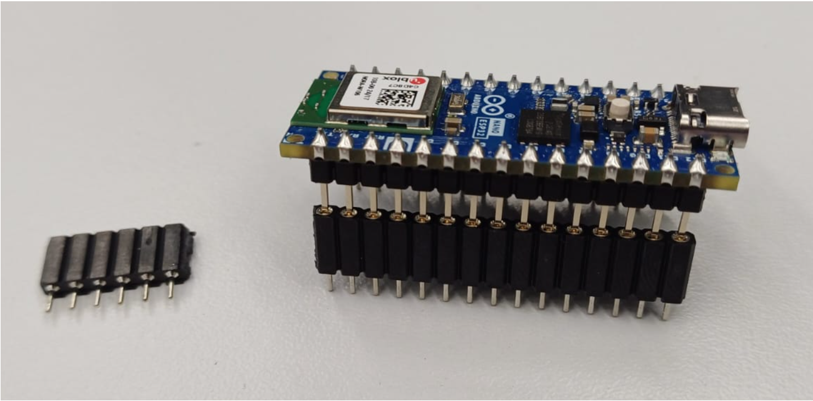
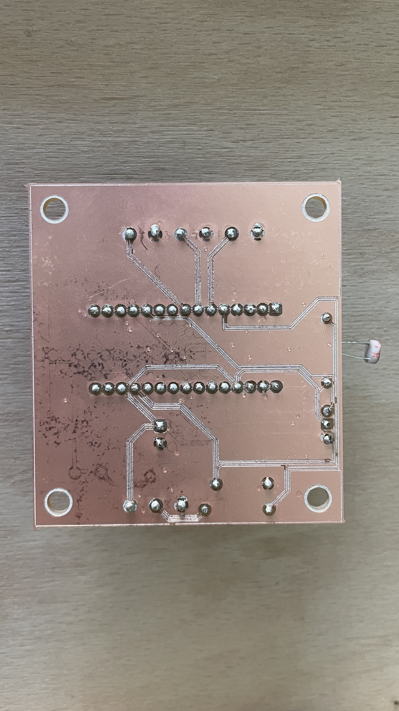
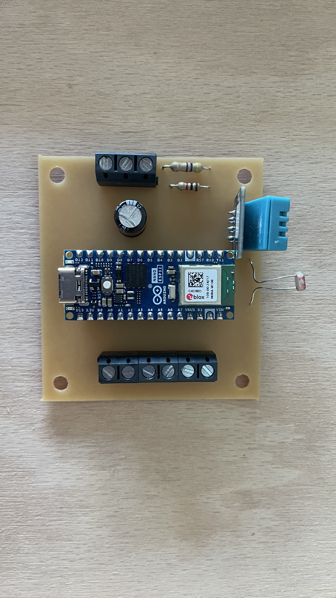
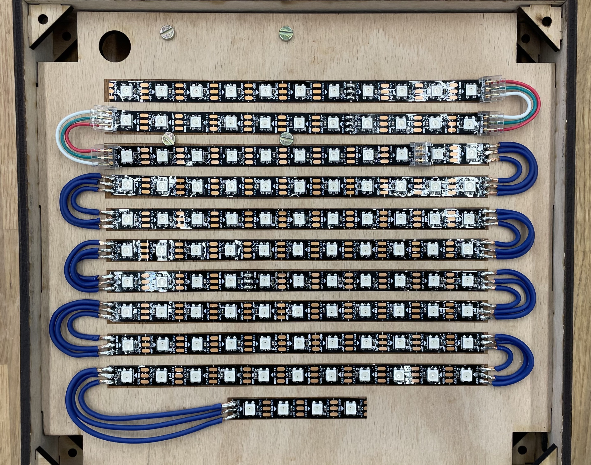
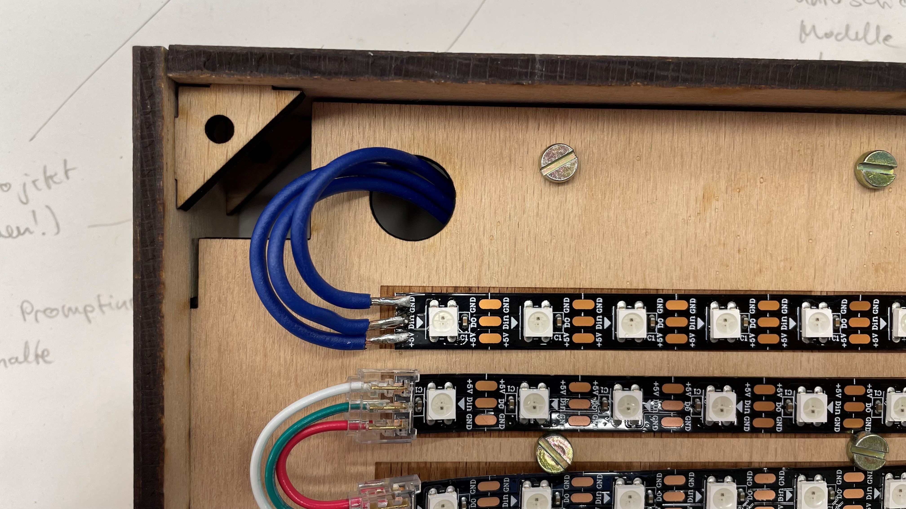

Aufbau
Insgesamt besteht das Gadget aus den folgenden Bauteilen:
- 3x Sperrholzplatte 5mm
- 1x MDF-Platte 3mm
- 1x Gravieracrylplatte, schwarz 2mm
- 1x DIN-A4 Transparentpapier
- 4x M4 Schraube kurz
- 4x M4 Schraube lang
- 4x Abstandshalter M4
- 8x Unterlegscheibe
- 8x M4 Mutter
- 1x Platine Wordclock
- 1x Arduino Nano ESP32
- 1x Leitungen 0,5mm^2 und 0,75mm^2
- 3x Taster
- 1x Fotowiderstand (Helligkeitssensor)
- 1x Widerstand 1kΩ
- 1x Widerstand 470Ω
- 1x Kondensator 1000uF und 6,3V
- 1x DHT11 Temperatur und Feuchtigkeitssensor
- 2x Steckverbinder je 15 Pins
- 1x Schraubklemme 3 Pol
- 3x Schraubklemme 2 Pol
- 10x LED-Streifen mit 11 LEDs
- 1x LED-Streifen mit 4 LEDs
- 1x USB-C Kabel
Gehäuse
Die Komponenten für das Gehäuse müssen zunächst im Lasercutter ausgeschnitten werden. Eine Anleitung zur Bedienung des Lasercutters ist auf dem SPE Sharepoint hinterlegt: Innovationswerkstatt - Lasercut Guide. Die Dateien, welche Ausgeschnitten werden, können heruntergeladen werden: Lasercut-Dateien ZIP Die Frontplatte wird einmal aus einer 3mm MDF-Platte ausgeschnitten und zusätzlich aus einer Gravieracryl Platte. Die restlichen Teile werden mit 5mm Sperrholz ausgeschnitten. In VisiCut muss das richtige Material als auch die richtige Materialstärke ausgewählt werden, um ein gutes Schnittbild zu garantieren. Alle Dateien außer die Seitenteile und die Zwischenplatte werden ausschließlich geschnitten und können somit im Modus „alles Cut“ unter dem Reiter „Mapping“ geschnitten werden.
.png)
Das zweite Seitenteil und die Zwischenplatte werden im Modus „Nach einzelner Eigenschaft“ – „unterschieden nach Strichfarbe“ geschnitten. Bei „Rot“ muss das Profil „Cut“ und bei „Alles andere“, „engrave“ angewählt werden.
.png)
Die Zwischenplatte wird nun mit der Nut in die Schlitze der zwei Seitenteile gesteckt. Es muss darauf geachtet werden, dass die Aussparung für das USB-C Kabel unten liegt. Nun können alle 8 Verbindungsdreiecke mit etwas Kraft auf die Enden der Seitenteile aufgesteckt werden. Im letzten Schritt werden die Seitenteile für Ober- und Unterseite des Gehäuses auf die Verbindungsdreiecke aufgesteckt. Es ist darauf zu achten, dass das Seitenteil mit den 3 Löchern das Oberteil ist.
Platine
Der Arduino muss nun korrekt verdrahtet werden. Dabei ist zu beachten, dass nicht direkt an die PINs des Arduino gelötet werden darf. Es werden daher, wie im folgenden Bild zu sehen, Steckverbinder verwendet. Diese können mit einem Seitenschneider auf die richtige Länge gekürzt werden.
Der Arduino und die restlichen Bauteile werden auf die Platine gelötet. Hierfür kann sich an folgendem Bild orientiert werden. Wichtig ist, die Bauteile an die korrekte Position zu löten.
 Tipp: Die Bauteile sollten nacheinander einzeln verlötet werden. Die Pins der Bauteile sollten nach dem Aufstecken auf die Platine gekürzt werden.
Als erstes sollten die Steckverbinder des ESP32 verlötet werden. Pro Steckverbinder gibt es 15 Lötstellen.
Der Kondensator (zylindrisches Bauteil) wird links des ESP32 platziert. Hierbei muss unbedingt darauf geachtet werden, dass der „Minus Pin“ am Kondensator (der kürzere Pin am Bauteil) mit dem GND PIN der Platine verbunden ist (Ground Pins der Platine erkennt man an der „X Form“ des Durchgangslochs auf der Rückseite der Platine).
Die Widerstände können einfach, wie im Bild zu sehen verlötet werden. Hierbei muss jedoch der 470 Ohm Widerstand ganz außen sitzen. Der 1kOhm Widerstand wird rechts daneben aufgesteckt und verlötet.
Der DHT11 Sensor (Bauteil mit „blauem Kasten“) wird auf der oberen Seite angebracht. Der DHT 11 Sensor muss „von der Platine weg zeigen“ und kann dann verlötet werden.
Der Fotowiderstand (Helligkeitssensor) wird direkt daneben gelötet, die Polung spielt keine Rolle. Wichtig ist, dass der Sensor ebenfalls „nach oben zeigt“.
Als letztes müssen die 3 zweipoligen Schraubklemmen können durch aufeinander schieben verbunden werden. Sie werden wie im Bild zu sehen auf der rechten Seite verlötet. Die dreipolige Schraubklemme wird entsprechend auf der linken Seite verlötet. Die Anschlüsse für die Leitungen müssen bei allen Schraubklemmen nach außen zeigen.
Achtung: Es ist wichtig, dass alle Bauteile auf der richtigen Seite der Platine verlötet werden. Auf der Platine ist jeweils an der entsprechenden Stelle der Umriss des Bauteils aufgedruckt.
LED-Matrix
Zunächst müssen die LED-Streifen auf die Zwischenplatte geklebt werden. Auf dieser sind bereits Markierungen mit dem Lasercutter eingraviert, um dies zu erleichtern. Dabei muss man auf die Pfeilrichtung auf den Streifen achten, sodass die Pfeile in Richtung des Stromverlaufs zeigen. Die Pfeile der obersten Reihe müssen von links nach rechts verlaufen. Die Pfeile der zweiten Reihe müssen dementsprechend von rechts nach links zeigen. Die Richtung der Pfeile wechselt sich also in jeder Reihe ab.
Zuerst müssen die Kontakte der LEDs verzinnt werden. Wenn alle Kontakte vorbereitet sind, müssen die Leitungen vorbereitet werden.
TIPP: Legen Sie die ersten Leitungen erstmal in schönen Bögen an die Kontakte. Wenn eine passende Länge gefunden wurde, können die Leitungen für die restlichen LEDs vorgerichtet werden. Wenn die jeweiligen Leitungen für den „inneren“, „mittleren“ und „äußeren“ Bogen gleich lang sind, sieht es besser aus und spart Zeit.
Im nächsten Schritt müssen die Leitungen auf ca. 3-4mm abisoliert und ebenfalls verzinnt werden, dadurch wird das Anlöten an den Kontakten erleichtert. Anschließend können die Kontakte verlötet werden. Dabei sollte darauf geachtet werden, dass die Kontakte an den Schnittstellen passend zu der nächsten Schnittstelle gelötet werden (+5V auf +5V; DO auf DiN; GND auf GND). Hierbei kann sich an folgendem Bild orientiert werden.

Wenn die LEDs gelötet sind, müssen noch 3 Leitungen an den Anfang der LED-Streifen gelötet werden und durch das Loch in der Zwischenplatte geführt werden. Das Ende dieser Leitungen wird abisoliert und mit Aderenthülsen versehen.
Taster
Um die Taster mit der Platine zu verbinden, benötigen wir zwei Leitungen pro Taster, die auf eine passende Länge zugeschnitten werden. Danach kann jeweils eine Seite der Leitung auf 3-4mm abisoliert werden.

Die Pins der Taster und die Enden der Leitungen werden nun mithilfe eines Lötkolbens verzinnt. Dann können die Pins auch schon mit den Enden der Leitungen verbunden werden.

Das andere Ende der Leitungen wird ebenfalls abisoliert und mit passenden Aderenthülsen versehen.